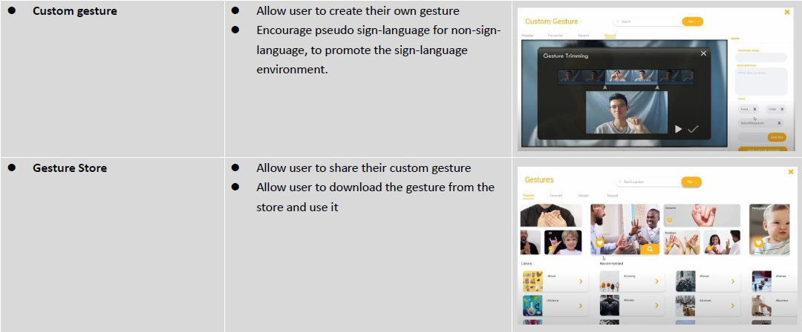

About Handler
Communication Tool For Deaf & Mute
Project Handler is an online communication tool that aims to help deaf or mute user to enjoy video call and also enable them make normal phone call. By providing inter-convertion between sign-language and speech.
Project Handle makes uses of Image Processing to capture the user gestures and AI to perform grammer check on the translated text.
Prototype
Featuring Function
- Realtime speech to text subtitle
- Realtime speech to sign-language translation
- Realtime sign-language to speech translation
- Meeting message recording
- Grammer checking with AI
- Create custom gesture
- Gesture Store
- Meeting room maker
- Video call conference
Mind Map

When we first ideate the project idea, we first peek into the existing products in the market. Then we extents our visons to different plattforms, such as Zoom, discord , etc. One Common point with these platform is that they all aim for teens and adults, they don't provide much support to elderly or disables.
Then we look into the technical part, we found out the biggest issue in the current exisiting is the internet connection. As a communication tool, poor internect connection may lead to serious lag and not able to deliever the complete messages.
To combin both points and create an unique product, we decide to design an application to aids the deaf and mute to conduct online communication.
Interpret
Experiment
Taking a Zoom class with Audio Off
To experience how do deaf feel to attend a vidoe call, we tried to mute the speaker audio for 5 minutes and see we do we get in the lesson. The result of the experiment is we cannot understand anything, lip reading is quite not possible. We got easily distracted as we fail to get any concept that is not written on the slice.
Storyboard

Ideate
After we have brainstorm sereval ideas and functions for our design, we decided to remove some features and implement some of it. Explain as follow:
These are function we kept in our design:
WOW Factors
There are mainly 3 WOW factors in Handler to make it stands out from other current proudcts.
Avatar Sign-Language Replay
In most of the video conference software, they do not provide sign-language translation. Yet, deaf/mute are more confort to comprehense sign-language rather than typing. With the avater features, non-sign language speaker can also easily communicate with sign-language user. As their speech will translated to sign-language and replay by the avatar.Such there is no need of the non-sign language user to learn about sign-language before hand. This will greatly enhence the communication with deaf/ mute people.
Custom Gesture
Since using sign-language to explain a very detail concept will take a long time, e.g. 1 min . whereas normal people can speak in a line in seconds, with such idea we decided to make a custom gesture function which allow user to capture their own gesture and define the meaning. By defining custom gesture sign-language user can shorten the time for showing the same message. In which is a important concept as the non-sign-language user may not be patient as the different of deliver time of 2 languages exist such big different. On the other hand, non-sign-language user can also use this feature to make their daily communication easiler. There are also a gesture store which allows user to download other gesture and share thier own to make a trend.
Grammer Check
If there is a lag in communcation, it might cause misunderstanding on both parties as the message cannot deliver properly, thats why we intentional add a delay buffer to have enough time to translate the speech or sign-language locally, before send to the opposite. Handler uses AI to perform grammer check to ensure the translation have no major error before transmission.
Phone Dial
Deaf/mute people cannot dial phone call as they are unable to listen or speaks. Which make them unable to use many phone call service, such as food ordering,fire and ambulance service. Handler provides the phone call services and real time translation which make it possible. It required not pior knowledges or installation on the reciever side, this feature make it become a game changer in the industry.
Personal Reflection
In project Handler
- I learnt how to identify the niche of the current product
- I learnt how to look at the need of the user and refine our ideas
- I learnt to design a UI prototype with Adobe XD
- I learnt how to make uses of Leapmotion and Kinect
Make use to leap motion and 3tene to create the avatar gesture is a really interesting experience. Compare with other teams we believed we had spent extra effort on try out 3D avatar animation. Not just with leap motion, we had also tried using kinect and MikuMikuDance to perform motion capture. Also we didn't use Kinect in this project, but this should be a good start for the comming project
When we work on the this project more, we realise that Avater starts become the main trend of the market, no matter is in VR Chat, Vtuber , Zoom. Yet, a simple method to make a high quaility personal 3D avater is still not exists. This point may give us some motive in the next project.
One thing that our team are not satisfied was the presentation in class, as we didn't have enough time to present the entire powerpoint, many details and WOW factors weren't explained. This actually shows the untrustable human factor, maybe change to pure video presentation will have better performance for us.